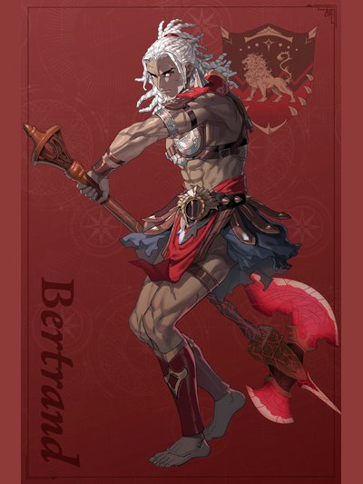

COMPANION DOSSIER
贝特朗
ベルトラン · 月之谎 / 白鸦新娘团 / 其他
检索别名：贝特兰 / 贝特朗 / 贝尔特兰
喜欢什么，送什么
鱼酱（garum） （其人设直接写明）
喜欢的东西：锻造、腌肉、鱼酱、精良武器
查看送礼原文与例外 →第一部 · 各路线加入条件
原手册未提供此角色的四路线招募表。
查看招募原文与附加说明 →交涉要准备什么
本批尚未独立核对该角色交涉流程。先看上方原表的物品、金钱、外传与 S／R 门槛；没有写出明细不代表无条件加入。
怎么养，怎么转职
编辑培养建议
觉醒自强化／第三部斧拳输出与剑系备选
- 前期
- 凯伊／迪托利希／赛奥朵拉线在第一部先完成贝特朗外传，第三部满足参战条件、实际可编成后再培养。低投入先保留已有勇士，主修常用斧或格斗，不必退回初级。勇士持斧／护手命中+5；精通并装备「熟练之技」后，仅战技攻击再获命中+10。武器先看实战命中与攻速，留足耐久和回复。
- 中期
- 第三部第1区分完成、考试开放后可接战斗将领：剑／斧／格斗选一项A备考，常用斧拳则不必三项全修。职业给战技栏+3、持斧／护手命中+7。精通「战鬼一击」是需要选择使用的斧战技，伤害为1.5倍；拳系成型不等于每次攻击都获得这个倍率。预算不足可继续勇士补刀。
- 后期目标
- 想改走剑系，可练剑A并在完成マーズの依頼、确认考试开放后选刀剑将领，换取持剑必杀+7；需另配剑，不能继续照搬斧拳战技。高投入再考虑ジ・エターナル：第三部第4区分起取得专用道具后，沿常用剑／斧／格斗一项S备考。已有穆或诺克裘拉成型时，先比较队伍缺口，再分配神将道具。
- 考试与解锁
- 战斗将领／刀剑将领每次考试需最上级票证1张，第三部フィーナの漁村市场标价8000G，另留训练、换武器和补考预算；Rank按备考目标写，合格率以存档为准。ジ・エターナル另需天冠神殿的「裁きの天秤」及开门钥匙。第一部四线均不可常规挖角；外传只在凯伊／迪托利希／赛奥朵拉线发生，蕾达线不能照搬。
- 取舍与限制
- 觉醒可先强化再攻击，持续至下次己方阶段：覇ノ覚醒补命中+50，閃／理分别补耐物／耐魔+10，嵐补回避+30；按将要面对的敌人选择，仍要算消耗后的HP与承伤。「铠葬流」仅5%概率无视攻速追击，击杀计划按不触发算。「冥狂」把槽升至6且爆发不解除Overblaze，却没有免除冥府型爆发削减最大HP的代价。
这些是阶段性培养方向，并非必须逐级转职的固定链。适用难度及版本未做独立实测；优先满足当前队伍缺口。
GameWith · 贝特朗 ↗Game8 · 贝特朗 ↗Game8 · 贝特朗外传与觉醒实图 ↗Game8 · 勇士 ↗GameWith · 勇士 ↗Game8 · 战斗将领 ↗GameWith · 战斗将领 ↗AppMedia · 战斗将领 ↗AppMedia · 考试与选择技能 ↗Game8 · 刀剑将领 ↗GameWith · 刀剑将领 ↗Game8 · ジ・エターナル ↗GameWith · ジ・エターナル ↗GameWith · 最上级考试票证 ↗GameCap · 第三部商店 ↗kanata · 蕾达线至战争篇实玩 ↗よるよみ · 困难通关培养回顾 ↗攻略来源交叉参考 · 未作游戏内实测
本次新增条目经过来源页面核对，未逐项游戏内实测。没有补充明细的“交涉”仍待核验，不表示没有额外要求。